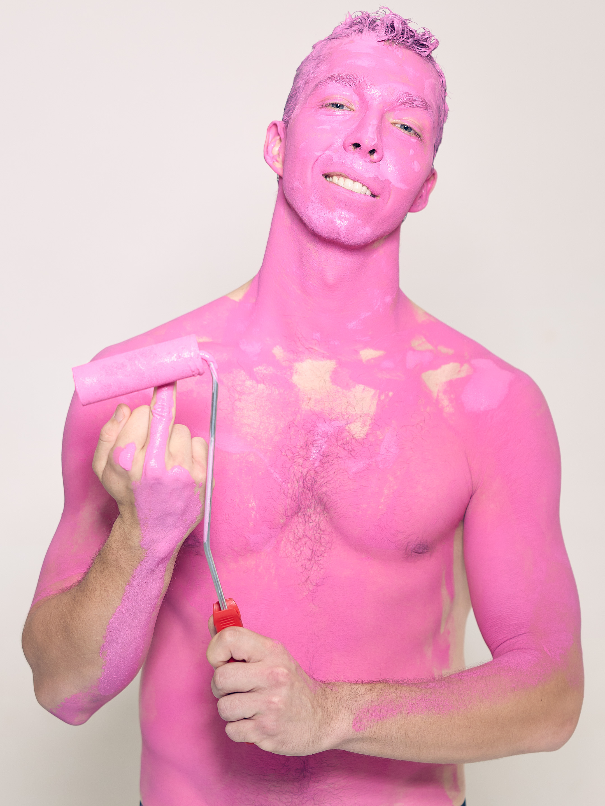

01 Divadlo · Marketing & PRLži, které
muži říkají
Příběhprojektu
DEKKADANCERS
Marketingová a PR kampaň s cílem prodat 1 710 vstupenek.
Vybrané příběhy
Procházejte projekty jako online magazín. Každý příběh ukazuje zadání, můj přístup i prostor pro konkrétní výsledky.

01 Divadlo · Marketing & PRDEKKADANCERS
Marketingová a PR kampaň s cílem prodat 1 710 vstupenek.
 02
Kultura · Public relations
02
Kultura · Public relations
Má vlast
PR pro koprodukční projekt s více než 250 mediálními výstupy.